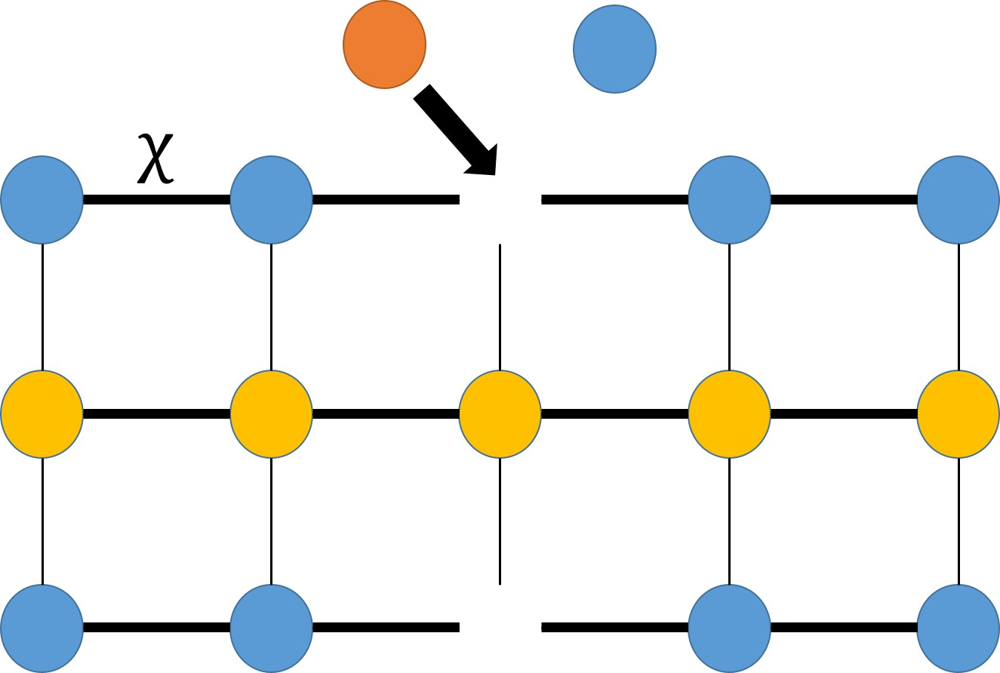
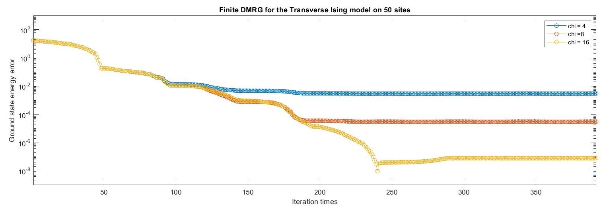

\[
\begin{align*}
\hat{H}_{super}&=\hat{H}_{s,e}+\hat{H}_e\otimes \mathbb{I}+\mathbb{I}\otimes\hat{H}_s
\\
&\\
&=\begin{pmatrix}0&1&0&0\\
1&0&0&0\\
0&0&0&1\\
0&0&1&0\\
\end{pmatrix}\otimes \begin{pmatrix}0&0&1&0\\
0&0&0&1\\
1&0&0&0\\
0&1&0&0\\
\end{pmatrix}+\begin{pmatrix}0&0&0&-1\\
0&0&-1&0\\
0&-1&0&0\\
-1&0&0&0\\
\end{pmatrix}\otimes \mathbb{I}+\mathbb{I}\otimes\begin{pmatrix}0&0&0&-1\\
0&0&-1&0\\
0&-1&0&0\\
-1&0&0&0\\
\end{pmatrix}\\
&\\
&=
\begin{pmatrix}
-4 & 0 & 0 & -1 & 0 & 0 & -1 & 0 & 0 & 0 & 0 & 0 & -1 & 0 & 0 & 0 \\
0 & -2 & -1 & 0 & 0 & 0 & 0 & -1 & 0 & 0 & 0 & 0 & 0 & -1 & 0 & 0 \\
0 & -1 & -2 & 0 & -1 & 0 & 0 & 0 & 0 & 0 & 0 & 0 & 0 & 0 & -1 & 0 \\
-1 & 0 & 0 & 0 & 0 & -1 & 0 & 0 & 0 & 0 & 0 & 0 & 0 & 0 & 0 & -1 \\
0 & 0 & -1 & 0 & -2 & 0 & 0 & -1 & -1 & 0 & 0 & 0 & 0 & 0 & 0 & 0 \\
0 & 0 & 0 & -1 & 0 & 0 & -1 & 0 & 0 & -1 & 0 & 0 & 0 & 0 & 0 & 0 \\
-1 & 0 & 0 & 0 & 0 & -1 & 0 & 0 & 0 & 0 & -1 & 0 & 0 & 0 & 0 & 0 \\
0 & -1 & 0 & 0 & -1 & 0 & 0 & 2 & 0 & 0 & 0 & -1 & 0 & 0 & 0 & 0 \\
0 & 0 & 0 & 0 & -1 & 0 & 0 & 0 & -2 & 0 & 0 & -1 & 0 & 0 & -1 & 0 \\
0 & 0 & 0 & 0 & 0 & -1 & 0 & 0 & 0 & 0 & -1 & 0 & 0 & 0 & 0 & -1 \\
0 & 0 & 0 & 0 & 0 & 0 & -1 & 0 & 0 & -1 & 0 & 0 & -1 & 0 & 0 & 0 \\
0 & 0 & 0 & 0 & 0 & 0 & 0 & -1 & -1 & 0 & 0 & 2 & 0 & -1 & 0 & 0 \\
-1 & 0 & 0 & 0 & 0 & 0 & 0 & 0 & 0 & 0 & -1 & 0 & 0 & 0 & 0 & -1 \\
0 & -1 & 0 & 0 & 0 & 0 & 0 & 0 & 0 & 0 & 0 & -1 & 0 & 2 & -1 & 0 \\
0 & 0 & -1 & 0 & 0 & 0 & 0 & 0 & -1 & 0 & 0 & 0 & 0 & -1 & 2 & 0 \\
0 & 0 & 0 & -1 & 0 & 0 & 0 & 0 & 0 & -1 & 0 & 0 & -1 & 0 & 0 & 4
\end{pmatrix}
\end{align*}
\]
Obtain the ground state and its energy by diagonalize the Hamiltonian.
$$|\psi_0\rangle=\begin{pmatrix}
0.901912354634962 \\
-5.56199760821483 \times 10^{-18} \\
-5.85412182282601 \times 10^{-17} \\
0.224549392555643 \\
-4.91221161698398 \times 10^{-17} \\
0.108783940777690 \\
0.235245687968295 \\
-1.30321195493619 \times 10^{-17} \\
-6.39433063812845 \times 10^{-17} \\
0.0578827258889768 \\
0.108783940777690 \\
0 \\
0.224549392555643 \\
1.11022302462516 \times 10^{-16} \\
-1.11022302462516 \times 10^{-16} \\
0.0578827258889768
\end{pmatrix},\;E_0=-4.7588.$$
Construct the density matrix of the ground state
\(\hat{\rho}=|\psi_0\rangle\langle\psi_0|\) and the partial trace with respect to the enviroment
$$\hat{\rho}_s=Tr_e(\hat{\rho})=\begin{pmatrix}
0.863868325140290 & -6.16068231629410 \times 10^{-17} & -6.43615460212374 \times 10^{-17} & 0.215521402309545 \\
-6.16068231629410 \times 10^{-17} & 0.0671744794788005 & 0.0318876640133076 & -2.58247502971470 \times 10^{-17} \\
-6.43615460212374 \times 10^{-17} & 0.0318876640133076 & 0.0151843557274623 & -2.00096006810010 \times 10^{-17} \\
0.215521402309545 & -2.58247502971470 \times 10^{-17} & -2.00096006810010 \times 10^{-17} & 0.0537728396534469
\end{pmatrix}.$$
Obtain the eigenvectors of \(\hat{\rho}_s\)
- The Finite-Size variational Method and the DMRG
Finding the ground state in the finite-size system is
$$E_0=\inf_{|\Psi\rangle}\frac{\langle\Psi|\hat{H}|\Psi\rangle}{\langle\Psi|\Psi\rangle}.$$
We can definitely obtain the ground state energy and its eigenstate (ground state)
by solving the optimazation problem $$\min_{|\Psi\rangle}\frac{\langle\Psi|\hat{H}|\Psi\rangle}{\langle\Psi|\Psi\rangle}.$$
The most intuitive way to solve this is diagonalizing the Hamiltonian.
However, this is impossible for huge systems.
Since we know that the quantum states and the Hamiltonian
can be written as MPS and MPO. We can perform the optimization
tensor by tensor.
Consider the effective Hamiltonian \(\hat{H}_{eff}\) with respect to \(A\), \(\langle\Psi|\hat{H}|\Psi\rangle\)
without \(A^\dag\) and \(A\).
The local optimization problem is
$$\min_{A}(A^\dag\hat{H}_{eff}A-\lambda (A^\dag \hat{N} A-1)),$$
where \(\lambda\) is the Lagrangian multiplier to constraint
that \(\langle\Psi|\Psi\rangle=1\).
It is natural to consider the gradient with respect to the tensor
\(A^\dag\) to perform the optimization, that is,
$$\nabla_{A^\dag}(A^\dag\hat{H}_{eff}A-\lambda (A^\dag \hat{N} A-1))=0,$$
which leads to a generalized eigenvalue problem naturally
$$\hat{H}_{eff}A=\lambda \hat{N} A.$$
Now we discuss why the finite-size DMRG is equivalent to performing the variational
method in MPS space. This notion is similar to the conjugate gradient method, gradient descendent method, and the
tangent space method. We consider the optimization
in a subspace of the complete parameter space to make sure
that the computational complexity will not be to large. We can approximately
obtain the solution by iterations.
The finite-size DMRG is almost equivalent to the variational method
explained above, the only difference is that the super blocks in
the finite-size DMRG having two sites and
the super block in the variational method having only one site.
The algorithm of the finite-size DMRG is:
- Generate MPSs and MPOs: Create the Matrix Product States (MPSs) and Matrix Product Operators (MPOs) for the system.
- [Start of Right Sweep] Optimization: Optimize the matrices by diagonalizing the chosen matrices within the indexed tensor of the effective Hamiltonian.
- Normalization: Perform Singular Value Decomposition (SVD) to normalize the matrices on the left-hand side, integrating the left matrices into the subsequent tensor.
- [End of Right Sweep] Iteration: Use the newly obtained matrices as the starting point for the next tensor. Repeat steps 2 and 3 until the right boundary of the system is reached.
- [Start of Left Sweep] Optimization: Optimize the matrices by diagonalizing the chosen matrices within the indexed tensor of the effective Hamiltonian.
- Normalization: Perform SVD to normalize the matrices on the left-hand side, integrating the left matrices into the subsequent tensor.
- [End of Left Sweep] Iteration: Use the newly obtained matrices as the starting point for the next tensor. Repeat steps 5 and 6 until the left boundary of the system is reached.
- Iterative Sweeping: Repeat the entire sweeping process (steps 2 through 7) until convergence criteria are met.


The value of \(\chi\) does not change the convergence rate of the algorithm but is highly related to the upper bound of its effectiveness.
\[
\begin{array}{cccccccccccccccccccc}
1 \times 2 \times 2, & 2 \times 2 \times 4, & 4 \times 2 \times 8, & 8 \times 2 \times 16, & 16 \times 2 \times 16, & 16 \times 2 \times 16, & 16 \times 2 \times 16, & 16 \times 2 \times 16, & 16 \times 2 \times 16,\\
16 \times 2 \times 16, & 16 \times 2 \times 16, & 16 \times 2 \times 16, & 16 \times 2 \times 16, & 16 \times 2 \times 16, & 16 \times 2 \times 16, & 16 \times 2 \times 8, & 8 \times 2 \times 4, & 4 \times 2 \times 2,& 2 \times 2 \times 1
\end{array}
\]